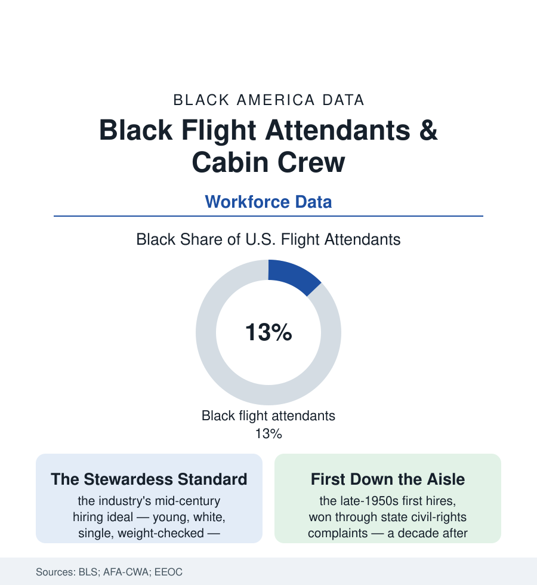

Black Employment
The Cabin: Flight Attendants and the Aisle That Integration Walked Down
The airlines hired no Black flight attendants until lawsuits and the jet age forced the door — the cabin crew file, from the first hires of the 1950s to today's workforce data.

The mid-century airline cabin was a showroom with a dress code: the carriers hired their stewardesses as brand ornaments — young, unmarried, height-and-weight-checked, and, by an unwritten rule that needed no writing, white. Black women were not merely underhired; they were absent, a zero in the workforce data of a glamorous new industry, until the first complaints and lawsuits of the 1950s forced the aisle open. This article reads the cabin crew file.
Breaking the Aisle
The breakthrough's documentary trail runs through the state civil-rights commissions of the late 1950s: the complaints filed against the major carriers — Capital, TWA, Mohawk in the case records — by qualified Black applicants (nurses, teachers, college graduates, meeting every published standard but the unspoken one), the hearings where the airlines defended the absence as customer preference, and the orders that followed, producing the first Black flight attendants at the decade's end. The jet age then did the volume work: the industry's explosive 1960s growth, Title VII's arrival, and the broader dismantling of the stewardess standard itself (the marriage bans, age caps, and weight rules falling to the same era's litigation — the cabin's liberation arriving as a package in the legal record, race and sex rules struck in the same line of cases, the flight attendants' own union maturing from a company-era association into the AFA's modern form) built the workforce the modern BLS data describe: flight attendants today a substantially more representative bench than the industry's front office or its flight decks, Black attendants in the low teens percent of the workforce in the federal counts, the seniority lists of the legacy carriers carrying the integration generation into the wide-body international routes — the bidding system's pure seniority, like the packinghouse's single list, converting years served into the best trips regardless of the holder's race, the contract quietly doing what the country argued about.
The Modern Cabin
The seniority system's blind fairness has its documented edge, and the pandemic exposed it on schedule: seniority protects by years, so the industry's most diverse cohorts — the recent hires — stand first in the furlough line when the schedule collapses, the 2020 contraction's workforce data showing the junior (and disproportionately Black and brown) benches idled deepest and recalled last at the carriers that cut. The regional tier writes the same lesson in wages: the industry's two-tier structure (the mainline contract against the regional carriers' fraction-pay for the same safety duties) concentrates its newest and most diverse crews at its worst terms — the integration arriving, as in the steel and textile files, with the best rooms of the house already being repriced. The union's current campaigns — boarding pay, the regional parity fights — are read in the workforce data as the integration generation's second negotiation: the first won the aisle; this one is about what the aisle pays.
Today's file writes the familiar two columns: the integration that held (a visible, seniority-governed, unionized workforce — the attendants' contract fights of the recent decades, over boarding pay and the industry's two-tier regional system, waged by a workforce whose diversity the picket lines show) against the industry's remaining sortings (the flight deck's far thinner numbers in the pilots article — the cabin integrated a generation before the cockpit; the premium-cabin and international assignments' soft hierarchies the grievance files record; the bases' geography, with the Atlanta and D.C. and Chicago domiciles' crews browner than the system's average in the workforce data). The pipeline institutions mark the file's present tense: the Organization of Black Aerospace Professionals' mentorship rows, the Sisters of the Skies (the Black women pilots' and aviation professionals' network — its cabin and cockpit members spanning the aisle's whole length), the airline cadet and ambassador programs in the communities the first hires came from. And the cultural record keeps the receipts: the first attendants' names in the Black press of 1958, the Ebony features, the generations of Black girls who saw the uniform in an airport for the first time on someone who looked like them — representation measured, in this industry, quite literally at 35,000 feet, in the aisle every passenger walks.
Reading the Cabin Data
An industry that once kept a whole people out of its most visible job now fields one of the more representative workforces in the transportation file — the cabin's lesson is about mechanisms: break the standard in court, grow fast enough to need everyone, and let seniority, blind and contractual, carry the integration forward year after year. The BLS counts the crew. The seniority list, in its quiet way, counts what fairness compounds into.
More in Black Employment
The Black Unemployment Rate: The Two-to-One Pattern
Black unemployment runs at roughly twice the White rate — 5.5 percent against 3.3 percent in annual averages — a ratio stable across five decades of federal data. How it is measured and why it persists.
Black Median Weekly Earnings: The 80-Cent Ratio
Black full-time workers earn a median of about $900 a week — roughly 80 cents for every dollar White workers earn. The BLS earnings data by group, gender, and occupation.
Black Labor Force Participation: Working at National Rates
Black labor force participation runs at roughly the national rate — and Black women participate at higher rates than White women. The BLS participation data.
Source: U.S. Bureau of Labor Statistics; Association of Flight Attendants-CWA records; Equal Employment Opportunity Commission historical cases; Organization of Black Aerospace Professionals data.